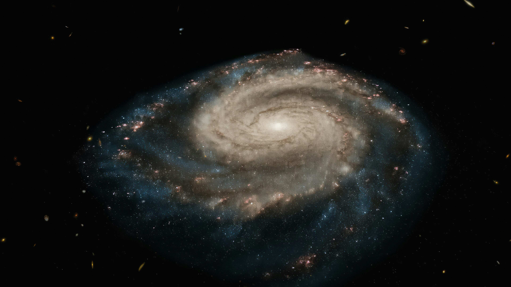
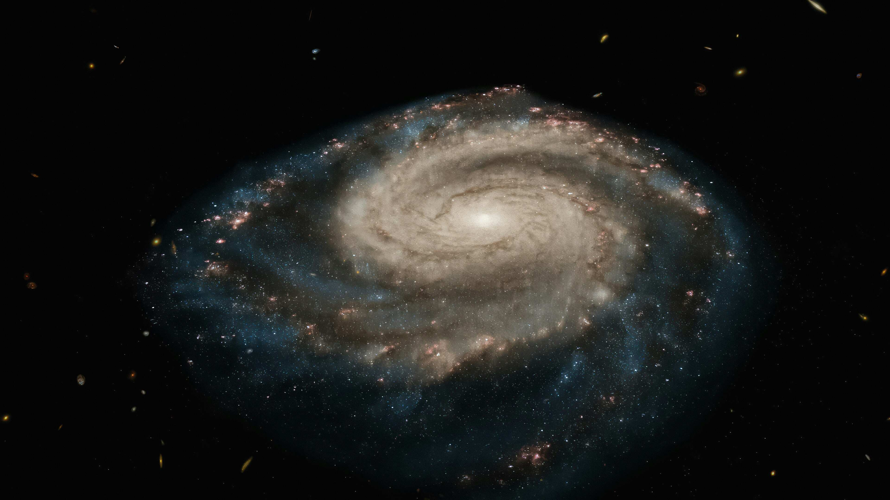
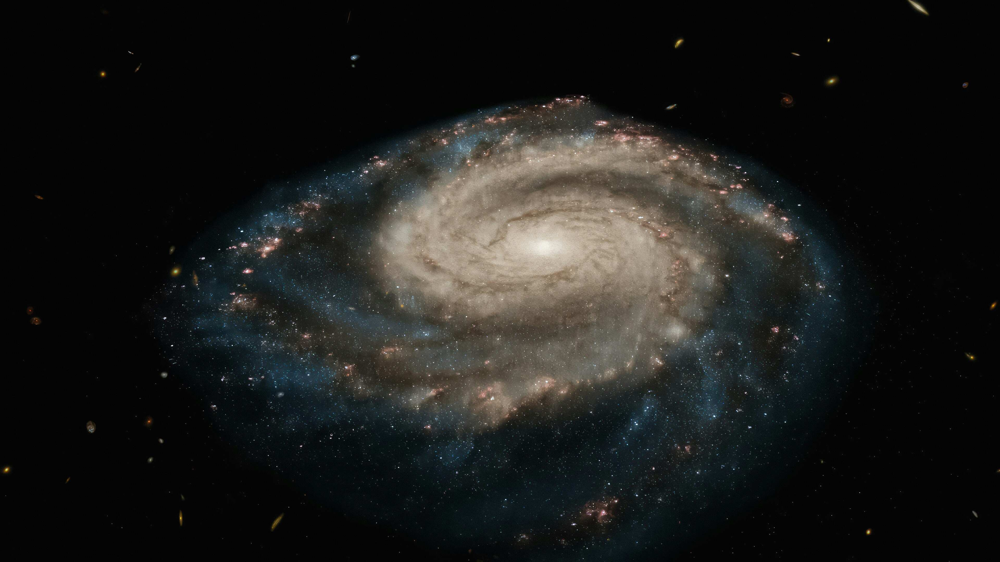
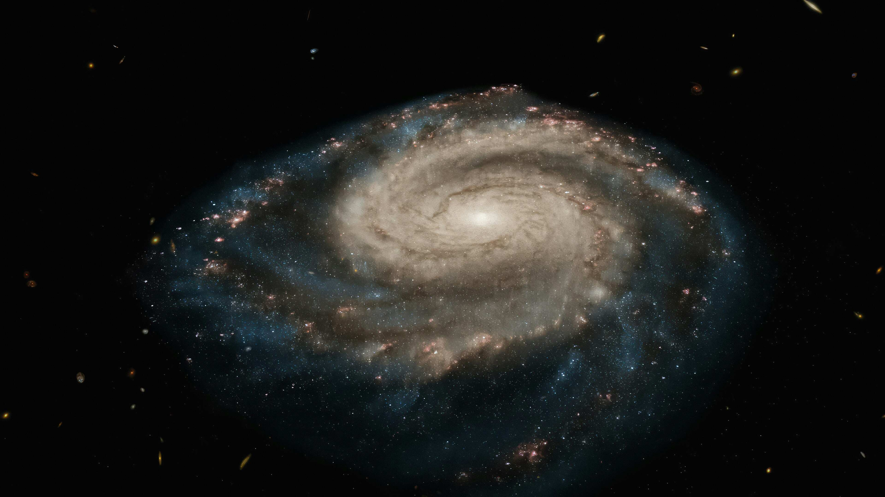

 

Na mijn graduatie aan de UGent in 2018 heb ik gedurende drie jaar lang vooral in de logistieke sector gewerkt als orderpicker. Dit was echter niet met opzet. Zo kreeg ik in 2019 het idee om een reis naar Nieuw-Zeeland te maken. Dit kwam doordat ik tijdens mijn universiteitsjaren, door het zien van vele natuurdocumentaires (I love David Attenborough!), gefascineerd was geraakt door de natuur. En als er een walhalla is voor natuurliefhebbers dan is dat Nieuw-Zeeland wel. Bijgevolg begon ik in 2019 een heus reisplan uit te stippelen. Het plan was om een jaar lang in Nieuw-Zeeland te verblijven en, van noord naar zuid en van hostel naar hostel, het hele land rond te reizen. Mijn verblijf zou ik bekostigen door in de horticultuur te werken waarin all-year-round werk te vinden is. De Nieuw-Zeelandse overheid had mijn visumaanvraag goedgekeurd en ik was volop voorbereidingen aan het treffen toen opeens COVID-19 uitbrak. Omdat de autoriteiten in Nieuw-Zeeland uiteindelijk besloten om het land op slot te doen, was ik genoodzaakt om mijn reis te annuleren.